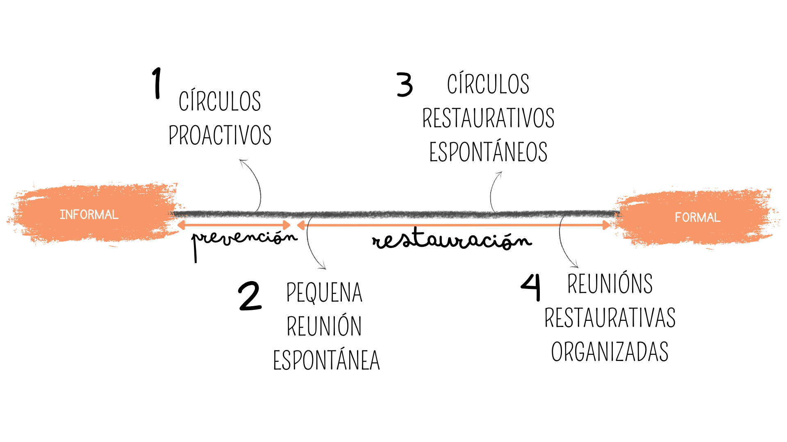
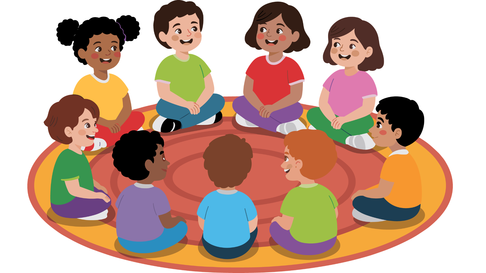
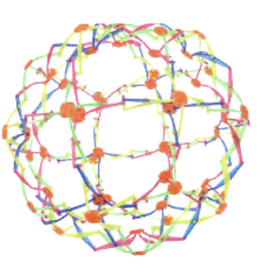
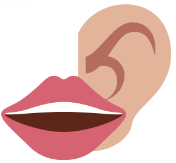
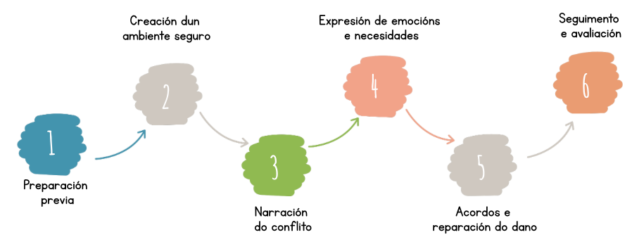
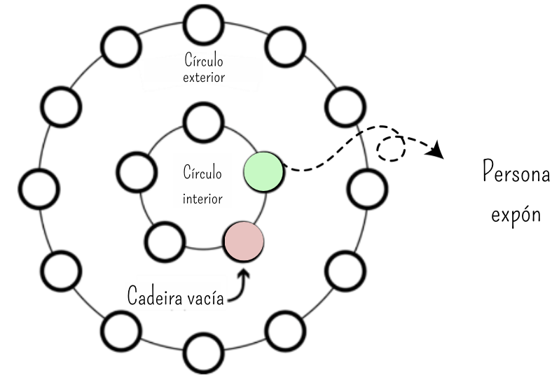

Círculos proactivos

Realízanse ao comezo de cada sesión de proxectos nos que se formulan preguntas restaurativas que favorecen a cohesión do grupo.
Lévase a cabo en círculos secuenciais, empregando un obxecto da palabra como recurso que favorece a regulación para os turnos. Só pode falar o que ten o obxecto da palabra

.Pequena reunión espontánea

No noso centro materialízase na zona Orella-Boca incluida no recuncho da calma. Este é un espazo do aula para practicar escoitar e falar con calma. Inclúe apoios visuais (turnos, volume, «escoítote / agora falo»).
Círculos restaurativos espontáneos
Un espazo de diálogo que se realiza cando xorde un conflicto ou unha situación que afecta ao grupo. Participa todo o grupo aula nun círculo secuencial ou non secuencial utilizando o obxecto da palabra para expresar como se sente e escoitar aos demais.
Reunións restaurativas organizadas

Tanque de peixes

Unha persoa X comparte un problema
- 5 minutos sin interrupcións para describilo e dar a coñecer o caso ás persoas participantes
- 5 minutos para preguntas aclaratorias
- 10 minutos para dialogar. A persoa X só escoita e toma notas
- 2 minutos para que a persoa X reflexione en alto e mencione 2 accións